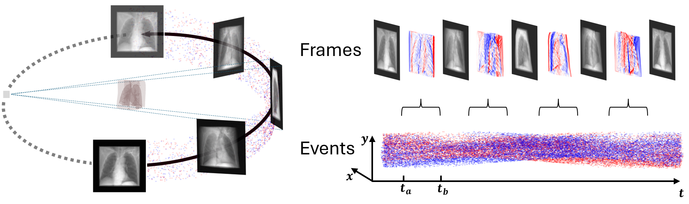
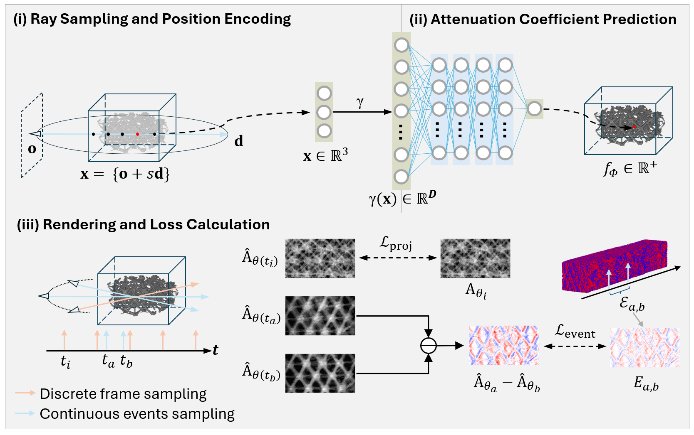
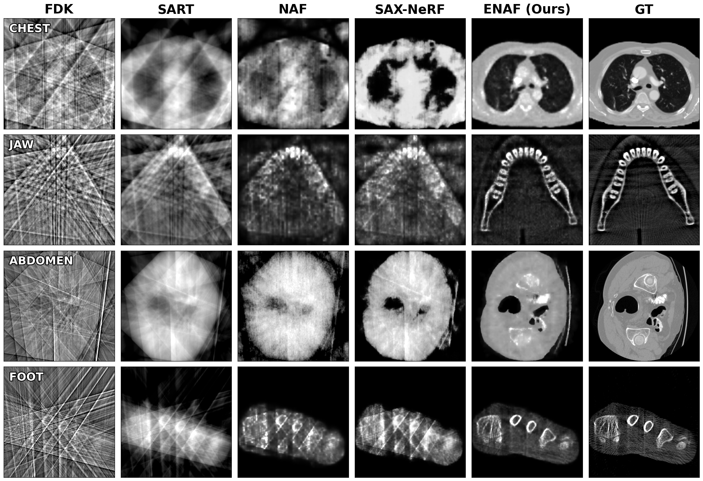
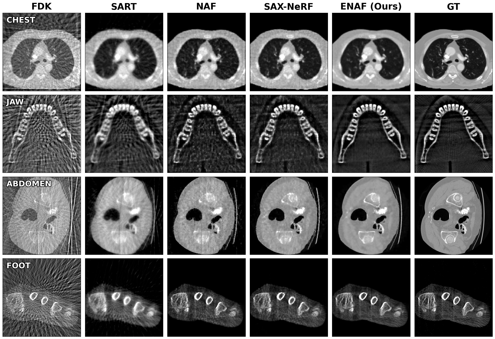
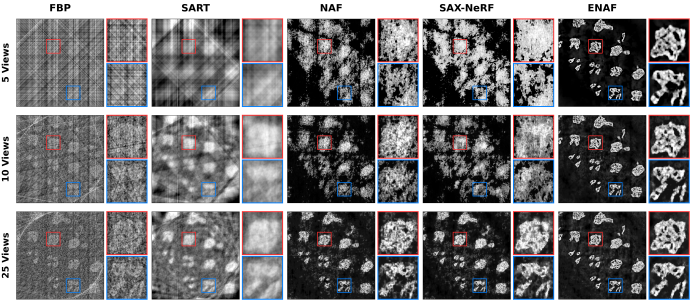
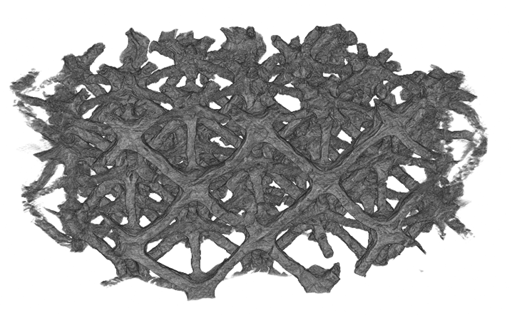
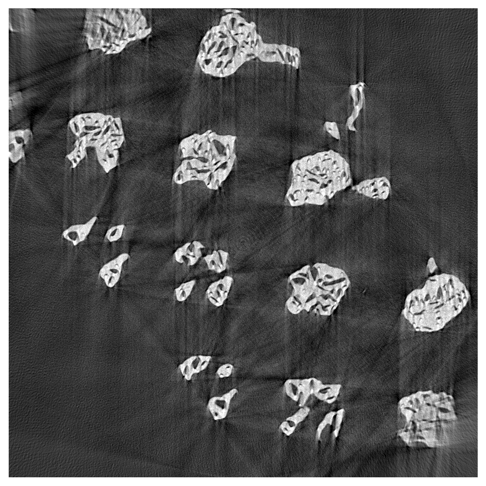
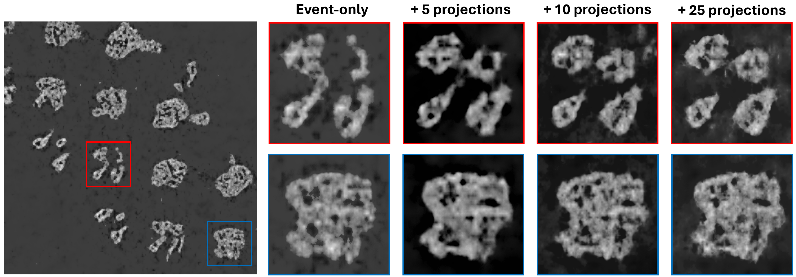
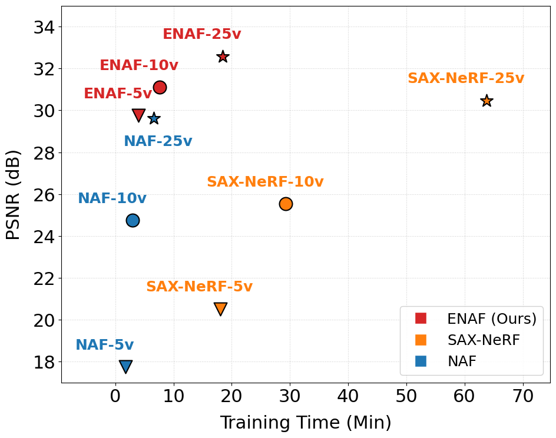

Neuromorphic X-ray Computed Tomography
ECCV 2026
ETH Zurich Paul Scherrer Institute Swiss Data Science Center

Abstract
X-ray computed tomography reconstruction is inherently an ill-posed inverse problem, particularly under sparse-view projections. Unlike traditional frame-based sensors, neuromorphic event cameras operate asynchronously at the pixel level and trigger events only when log-intensity changes exceed a threshold. This asynchronous sensing naturally captures high-frequency angular variations during object rotation, providing complementary information between sparsely sampled projections. We introduce a Neuromorphic X-ray CT framework and propose an Event-enhanced Neural Attenuation Field (ENAF) that jointly leverages sparse projections and event streams. Experiments on synthetic and real-world datasets show that ENAF improves sparse-view reconstruction quality over frame-only methods while maintaining practical training efficiency.
The Proposed Method
ENAF represents the volumetric attenuation field as a continuous neural function. During training, projection supervision anchors the absolute attenuation scale, while event supervision compares predicted projection differences against accumulated event maps over arbitrary angular windows.

Results
ENAF suppresses streak artifacts and preserves fine structures in both synthetic sparse-view CT benchmarks and a real-world nano-architected lattice dataset acquired at the TOMCAT beamline.







BibTeX
@inproceedings{wang2026neuroxct,
title = {Neuromorphic X-ray Computed Tomography},
author = {Wang, Hongjian and Lovric, Goran and Béjar, Benjamín},
booktitle = {European Conference on Computer Vision},
year = {2026}
}